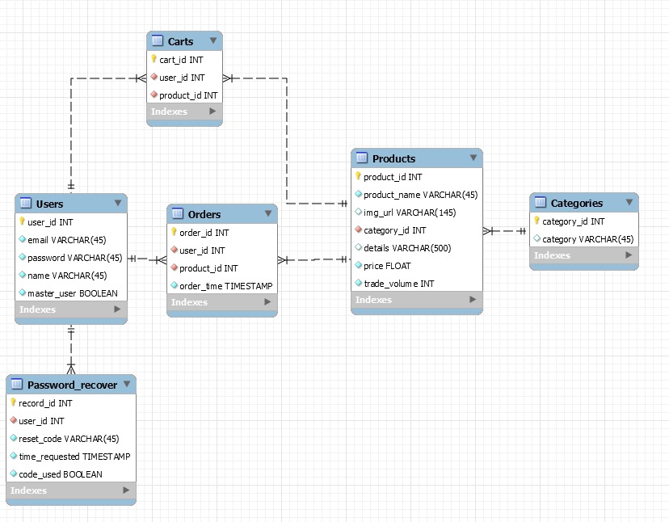
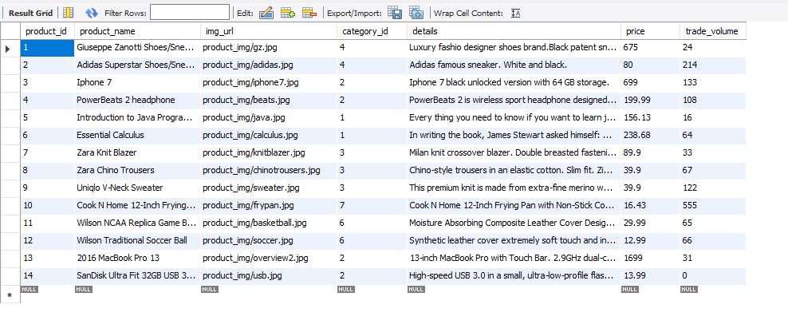

Project: A mock website similar to Amazon, called Amockzon.
Cusomization: This website is quit complex and you can tell how it is significantly improved over class assignments
Database: Implemented my own database with data populated

Site Content: Have lots of graphics and javascript content as you can see.
It serves as a shopping website (function).
Can calculate price over your orders, and search products by different criteria (by category and by name).
Site Design: Design is consistent across site as you can see.
Administrative Functionality and Basic Security: has login, sign up, password reset system.
master users have one more button on nav bar (add product) which allows this user to add new products to database. Normal users do not have that option. Normal users can only seach for products, add products to cart, check out, and view order history.
Extras: Sessions, membership system, email generated when reseting password, file upload(uploading image when adding product as master user) implemented.
Instructions: on login page, you can either sign up or use account: (kevin.yky1@gmail.com, 111111) and (kaiyuany@usc.edu, 111111) to log in. The latter is a master user. You can not sign up as a master user so do use the latter account (kaiyuany@usc.edu) to check master user functionalities.
After logging in. You can search products by category by pressing the dropdown list on nav bar. Or you can type in the text field to search by name, press search to submit. Here is the product database for you to easier to check search functionalities.

After seasrch there is an add to cart button on every product, you can press it to add it to cart. you can view you cart by pressing "cart" on nav bar. On cart page, there is a table listing all products, amount and price of your added products, and the total price is calculated down below. You can press "Check out" to clean out your cart and add those products to your order history.
By pressing "Orders" on nav bar you can view your order history.
Thank you and have a great holiday!